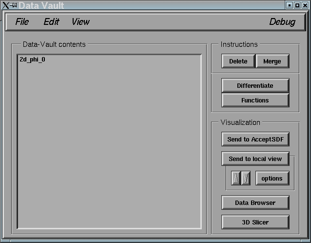

Registers
The DV organizes data sets into registers, which are ordered lists
of grid functions. A single register contains all the grid functions
for a single variable, and is identified by a unique character string (up
to 256 characters in length). The DV main window displays a list of all
current registers within the DV. As described in the next section, the
register list can be 'expanded' or 'contracted' to show more or less
information about the contents of given registers. Most of the functions
of the DV operate on entire registers.
The following snapshot shows a sample of what the DV main window might
look like after sending the sample data file as described on the previous
page. In this case there is a single register "2d_phi_0".

Home
Previous
Next